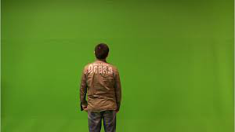
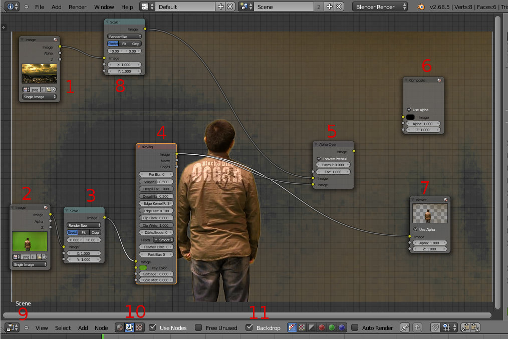
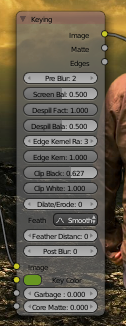
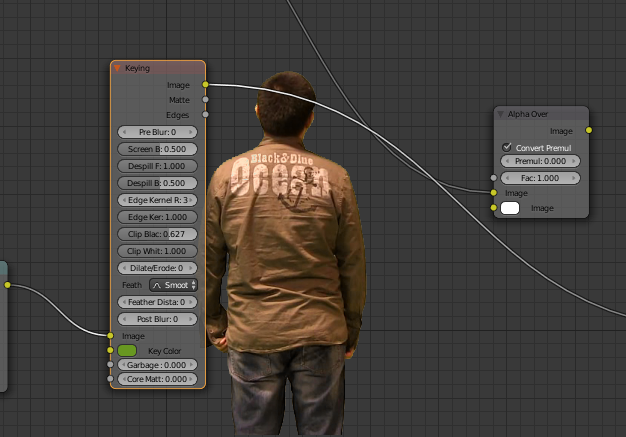
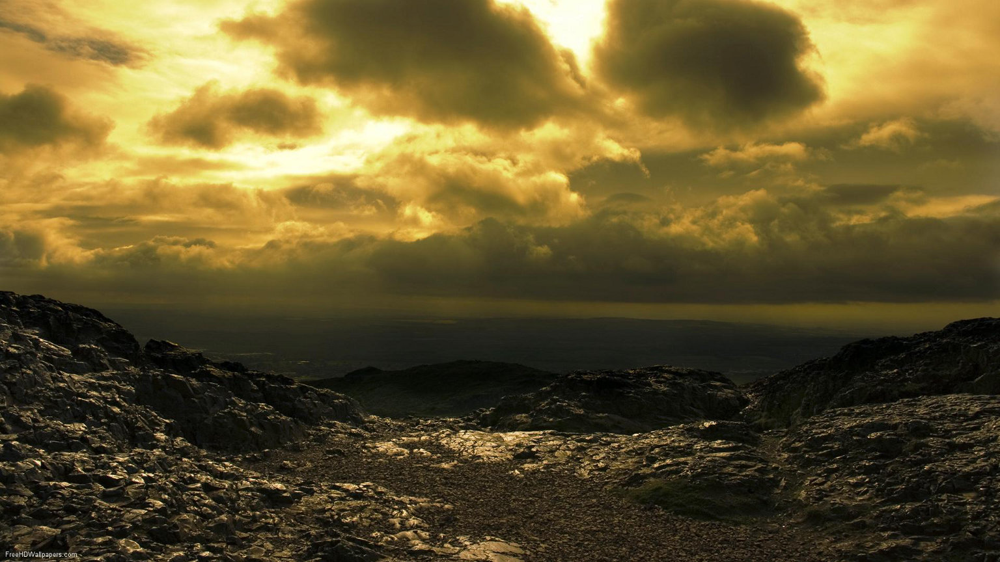
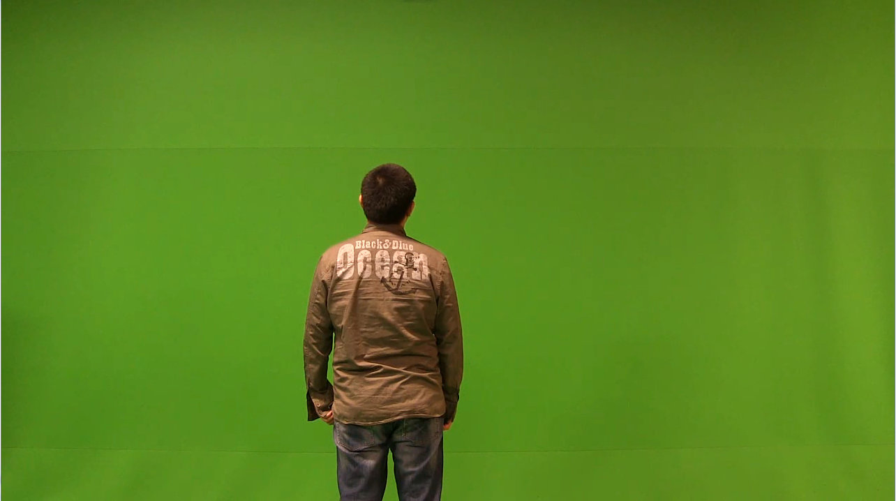
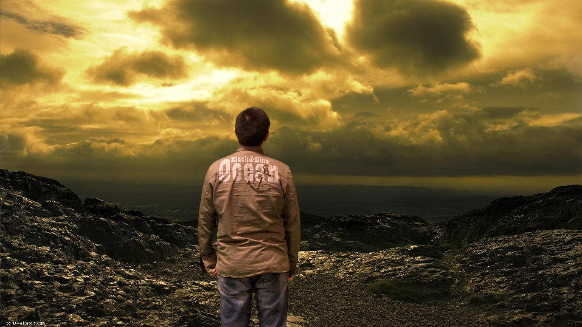

“Chroma key” (ou Keying) é o nome de uma técnica de VFX (efeitos visuais, Visual FX) que visa eliminar o fundo de uma imagem (geralmente anulando uma cor sólida), isolando elementos de interesse (personagens, veículos, etc) que depois são combinados (compostos) com outras imagens de fundo. A utilização mais comum do azul ou verde (como cor sólida para o fundo) explica-se pela tendência presente na pele humana e nos lábios para as tonalidades de vermelho. Sendo o verde e o azul as melhores opções para fazer contraste.
O Blender disponibiliza diversas ferramentas úteis para quem pretende criar VFX. O nó Keying é uma das mais relevantes.
No exercício seguinte, iremos utilizar as seguintes imagens:
O trabalho de Keying e composição são feitos no Node Editor.
Na imagem abaixo é possível ver a configuração base de um trabalho deste tipo.
1. Nó Image (Input) que permite inserir a imagem que irá servir de fundo.
2. Nó Image (Input) que permite inserir imagem com personagem e fundo verde.
3. Nó Scale (Distort) que permite manipular a escala da imagem. No nosso caso, estamos a utilizar Render Size para a imagem ser redimensionada de acordo com a resolução especificada no painel de renderização.
4. Nó Keying (Matte) que vai anular a Key Color. Na imagem acima, depois de conectarmos a imagem ao nó, utilizámos a ferramenta conta-gotas (clique na Key Color) para escolher um dos tons de verde presentes na imagem. Daí a Key Color na imagem apresentar já uma cor verde (em vez do branco pré-definido) e não ser visível o verde no fundo da imagem no backdrop (já foi removido).
5. Nó Alpha Over (Color) que permite a sobreposição das duas imagens.
6. Nó Composite (Output). Nas imagem acima, como ainda não terminámos a configuração, ainda não está conectado ao nó Alpha Over (se fizesse render com esta configuração, iria obter uma imagem “vazia”).
7. Nó Viewer (Output) que permite ir visualizando o resultado de cada nó no backdrop (fundo da área de trabalho do Node Editor). O que estiver conectado a este nó é apresentado no backdrop.
8. Nó Scale (Distort) que permite manipular a escala da imagem. No nosso caso, estamos a utilizar Render Size para a imagem ser redimensionada de acordo com a resolução especificada no painel de renderização.
9. Janela Node Editor
10. Ativação do nós para composição.
11. Ativação da visualização no backdrop
A imagem acima apresenta ainda diversos problemas. Para melhorar a remoção do fundo utilizámos as opções presentes no nó Keying. No final, a nossa configuração ficou similar à da imagem apresentada a baixo.
 > Pre-blur pode ser utilizado para introduzir algum desfoque na imagem original (por exemplo quando a imagem tem demasiado grão ou artefatos de compressão ) permitindo homogeneizar ruídos e imperfeições .
> Despill controla a quantidade de cor que é “despilled” da imagem original (0 = sem “despilling”, 1 = máximo de “despilling”). O efeito de spill acontece quando a cor de fundo transborda o “background” e acaba por derramar sobre os personagens e objectos do“foreground”.
> Edge Kernel Radius defines o raio dentro do qual será determinado se um pixel pertence a um limite/aresta.
> Edge Kernel Tolerance define tolerância utilizada para verificar proximidade/igualdade entre pixels (se a diferença entre os pixels for superior a esta tolerância, será considerada a existêncoa de uma aresta/fornteira).
> Clip Black e Clip White são utilizados para aumentar/manipular o contraste (i.e. pixels que quase pertencem ao fundo passam a ser considerados como fundo; pixels que quase pertencem ao “foreground” passam a ser considerados como “foreground”).
> Dilate/Erode pode ser utilizados para dilatar/expandir ou roer contornos.
> Feather Falloff e Feather Distance controla efeitos para suavizar contornos (pode permitir resultados de melhor qualidade, são mais suaves, do que o Dilate/Erode).
> Post-blur aplica defoque (fica menos “sharp”) no resultado.
Para finalizar, pode ainda melhorar o aspeto final através de outros nós (correção de cor, etc.).
Para utilizar esta técnica em vídeo existem duas hipóteses:
a) Pode introduzir o vídeo e aplicar a técnica diretamente no ficheiro vídeo;
b) Pode converter o vídeo para frames (imagens) e aplicar a técnica a uma sequência de frames/imagens.
Recomenda-se vivamente a segunda opção por uma questão de rapidez e gestão de memória!
  